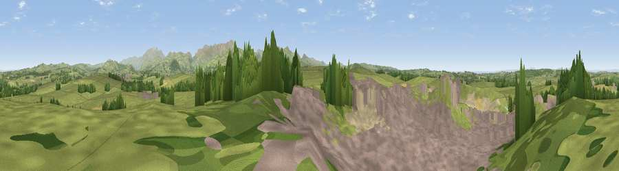

Viewpoint near Eaglesfield
#10562 in England · top 57% of its area beats it · near EaglesfieldThe view, rendered

A 360° render of this exact spot computed from the terrain model, tree cover and land cover — summer colours, afternoon light, calibrated against photographs of famous viewpoints. Real trees, hedges and buildings will differ in detail.
The panorama
Grey silhouette: terrain skyline in each direction (720 bearings, Earth curvature and refraction included). Dashed green: skyline with trees (+15 m) and buildings (+8 m) as obstacles. Blue strip: how far the ground is visible on each bearing.
Where the view opens
Wedge length = distance to the farthest visible ground on that bearing (vegetation-aware). Rings at 10, 25 and 50 km.
What fills the view
60% grassland · 25% built-up · 9% woodland · 3% bare ground · 2% cropland
Angular shares of the visible panorama (visual magnitude), not map area. Landscape diversity 0.48 (0–1 Shannon).
Key numbers
More beautiful places nearby
The staircase of upgrades: each row has a higher view potential than everything closer. Driving times are estimates from straight-line distance, calibrated against real road routing — check an actual route before setting out.
| Place | Direction | Drive | Score |
|---|---|---|---|
| Pardshaw Crag | SSE · 3 km | ~8 min | 67.0 |
| Viewpoint near Lorton | ESE · 5 km | ~12 min | 72.0 |
| Whin Fell | SE · 6 km | ~12 min | 76.9 |
| Viewpoint near Loweswater | SSE · 7 km | ~15 min | 83.1 |
| Viewpoint near Loweswater | SSE · 9 km | ~17 min | 85.5 |
| Blake Fell | SSE · 9 km | ~18 min | 86.9 |
| Crag Fell | S · 14 km | ~26 min | 89.1 |
| Ullock Pike | E · 15 km | ~27 min | 89.4 |
54.64629, -3.41211 · source: screening · position refined by local search. Computed location — check access rights before visiting.